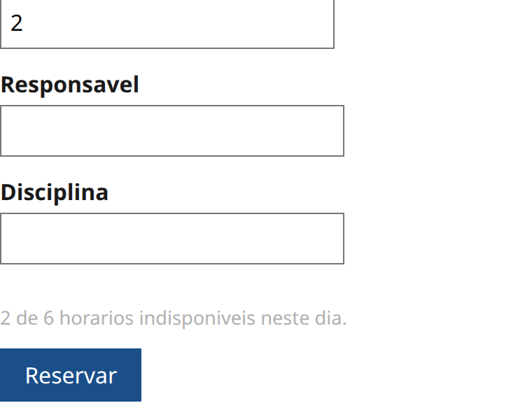
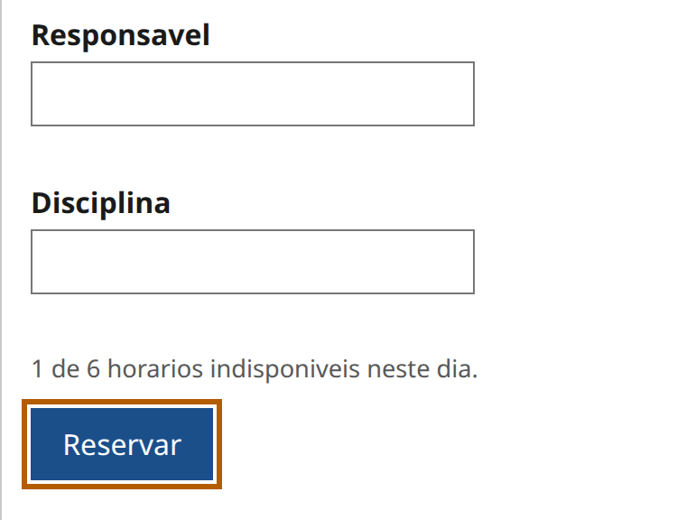

DCC061 · Engenharia de Software · Grupo 5
Quando o sistema passa nas ferramentas e mesmo assim não funciona
Gabriella Margarida Ribeiro Soares · Rafael Rocha Ribeiro
Prof. Fabrício Martins Mendonça · UFJF · 2026
IHC e Qualidade: conceito, história, normas, mercado e IA
O mesmo sistema feito duas vezes e medido
O que os dois temas mostram juntos
1 · Interação Homem-Computador
Usabilidade tem três partes (ISO 9241-11):
A pessoa conseguiu fazer o que queria?
Quanto tempo e esforço isso custou?
O sistema atendeu ao que ela esperava?
Fontes: ISO 9241-11:2018; Hewett et al. (1992).
1 · Interação Homem-Computador
Sketchpad: desenhar direto na tela
Engelbart mostra o mouse ao vivo
Nasce a ACM SIGCHI
10 heurísticas de Nielsen
NBR 17225: acessibilidade web no Brasil
Fontes: Sutherland (2003); DARPA; SIGCHI; Nielsen (1994); Ceweb.br (2025).
1 · Qualidade de Software
A ISO/IEC 25010:2023 mede o produto por 9 características:
Em 2023, "usabilidade" virou "capacidade de interação". A norma de qualidade passou a incluir IHC.
Fontes: ISO/IEC 25010:2023; Mendonça (2026), Aula 7.
1 · Qualidade de Software
Crosby: qualidade é cumprir os requisitos
ISO/IEC 9126, primeira norma de qualidade de software
Fundação do ISTQB (testes)
MPS.BR, modelo brasileiro
Nova ISO 25010, CMMI 3.0 e norma para IA
Fontes: Mendonça (2026); ISO/IEC 9126; ISTQB; Softex (2007); ISO/IEC (2023).
1 · Normas
IHC
Qualidade
1 · Ferramentas
dos problemas de acessibilidade foram encontrados pela automação. O resto precisou de uma pessoa.
Deque, 2021: mais de 13 mil páginas
das páginas iniciais mais acessadas da web têm falhas que já são detectáveis automaticamente.
WebAIM Million, 2025
1 · Mercado de trabalho
Designer de UX/UI · pesquisador de UX · UX writer · especialista em acessibilidade
Certificações: CPUX-F · NN/g UX · CPACC e WAS
Analista de testes/QA · engenheiro de automação de testes · engenheiro de qualidade
Certificações: CTFL (ISTQB) · CSQE · empresas: ISO 9001, CMMI, MPS.BR
Nenhuma é obrigatória por lei. Em nov/2026 o ISTQB lançou certificações de usabilidade e acessibilidade.
1 · Inteligência Artificial
dos devs usam ou vão usar IA. Só 33% confiam no resultado.
Stack Overflow, 2025
de estabilidade nas entregas com mais uso de IA
DORA / Google, 2024
de código reescrito em menos de 2 semanas (projeção para 2024)
GitClear, 2024
2 · O código
Um sistema pode passar nas ferramentas de qualidade e ainda assim ser impossível de usar?
Para responder, fizemos um sistema de reserva de laboratórios do DCC.
2 · O código
Defeitos colocados de propósito:
Mesma função, refatorada:
github.com/Rafaelrr5/reserva-labs-dcc
2 · Demonstração

Versão 1: o Tab nunca chega no botão

Versão 2: o Tab chega no botão (contorno laranja)
2 · Demonstração
// versão 1: parece botão, mas o teclado não alcança <div onClick={confirmar}>Reservar</div> // versão 2: botão de verdade <button type="submit">Reservar</button>
Com o mouse, as duas funcionam. Quem usa só o teclado não consegue reservar na versão 1.
2 · Resultado medido
2 · O encontro dos dois temas
não acusou nada no "botão"
não acusou nada no "botão"
impossível
A regra procura botões sem nome. Ali não existe botão, então não há o que acusar. Só testar a tarefa (IHC) achou o problema.
2 · Manutenção
"10:00 está indisponível"
aceita a reserva às 10:00
Causa: a mesma regra estava copiada em 3 lugares, e uma cópia ficou diferente.
3 · Conclusão
Limites: defeitos colocados de propósito e sem testes com usuários reais. O método vale; os números são destas duas versões.
Referências principais
Lista completa, com links, no documento-texto.
Perguntas?
Código: github.com/Rafaelrr5/reserva-labs-dcc